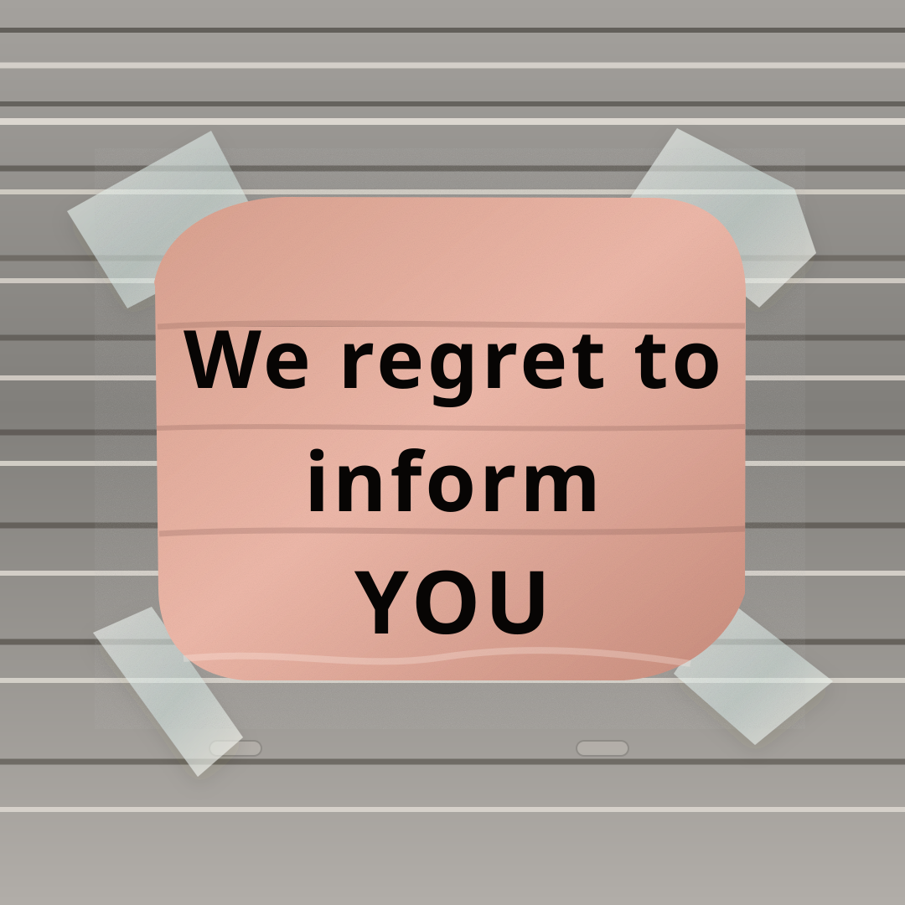
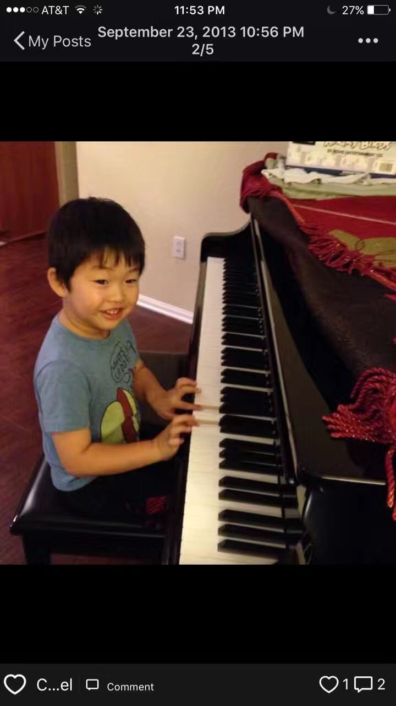
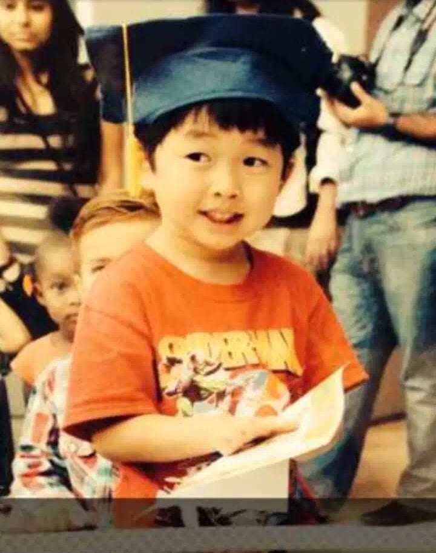

Growth & Resilience
Rejection
A reflection on rejection, disappointment, envy, and learning that setbacks often make future successes more meaningful.
Read MoreStories / Blog
Personal stories from Broad Shoulders Initiative about student mental health, resilience, identity, and support.

Growth & Resilience
A reflection on rejection, disappointment, envy, and learning that setbacks often make future successes more meaningful.
Read More
Communication & Connection
Takopi's Original Sin taught me that many of life's struggles cannot be solved through magic or shortcuts. Sometimes healing begins with something much simpler: communication.
Read More
Growth & Perseverance
Research taught me that growth rarely comes from breakthroughs. More often, it comes from repetition, patience, and the willingness to continue practicing long before you can truly enjoy the music.
Read More
Body Image / Self-Esteem / Personal Growth
A reflection on acne, self-consciousness, and learning that the problems we study most closely can become teachers in patience, care, and growth.
Read More
Athlete Mental Health
A reflection on soccer, injury, and learning to quiet performance anxiety by returning to the reason the game first felt joyful.
Read More
Eating Disorder and Mental Health
A reflection on food, body image, recovery, and learning to see the shoulders once treated as insecurity as a source of strength.
Read More
Athlete Mental Health
A reflection on injury, identity, and learning that an athlete's worth is not defined by performance, recovery timelines, or the sport they love.
Read More
Family Situation
A reflection on growing up between two loving households, learning to release embarrassment, and finding resilience in the constant transitions of family separation.
Read More